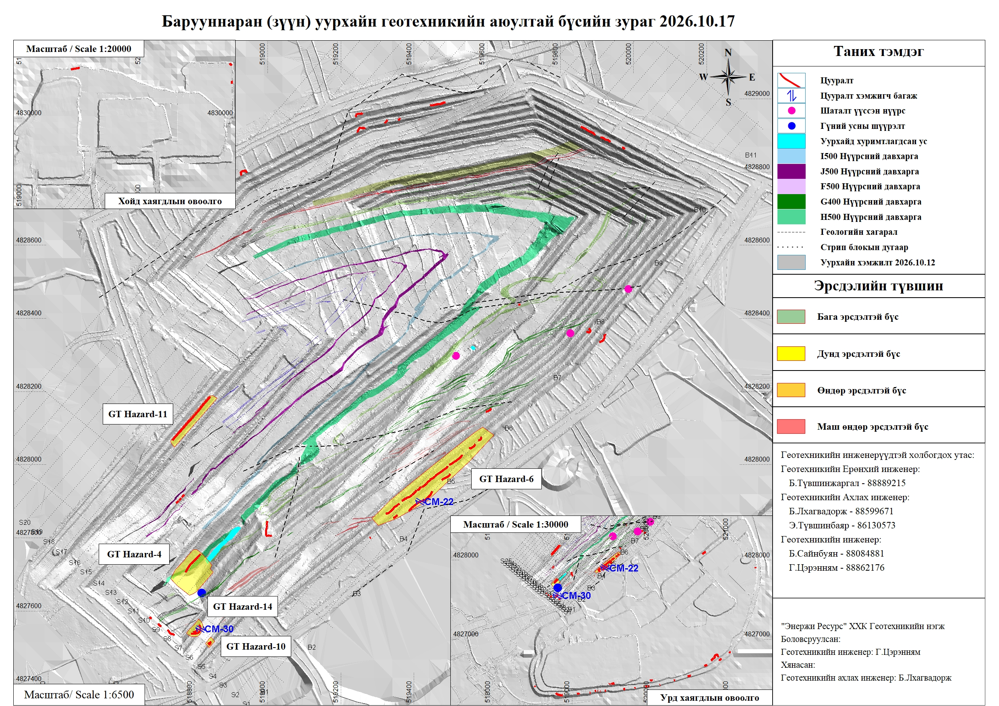

GT Hazard-10
Уурхайн налуу зам-2, 1570-н түвшингийн 10м доголын ирмэг дагуу цуурч, өгөршсөн материал дээр гулсалт үүссэн. Гулсалт үүссэн доголын өндөр 10м, гулсалтын урт нь 8м орчим. Цууралттай хэсгийн доод тээврийн замын хамгаалалтын хөмсгийг стандартын дагуу хийx. Шинээр ирмэг дагуу цууралт үүсэх, гулсалт нуралт ажиглагдах, тогтворгүй нөхцөл байдал үүсэх тохиолдолд геотехникийн инженерт яаралтай мэдэгдэж шалгуулах шаардлагатай.

GT Hazard-11
Уурхайн налуу зам-1, 1570-н түвшинд, өгөршлийн бүсэд хажуу налуугийн аюулгүйн тавцан дээр 160м орчим урттай цууралт үргэлжлэх ба 30-40см доош суулт үүссэн. Тухайн эрсдэлтэй бүсийн доор ажиллахдаа JHA хийж ажиллах. Шинээр ирмэг дагуу хагарал, цууралт үүсэх, гулсалт нуралт ажиглагдах буюу тогтворгүй нөхцөл байдал үүсэх тохиолдолд геотехникийн инженерт яаралтай мэдэгдэж шалгуулах шаардлагатай.

GT Hazard-6
Уурхайн урд хэсгийн хажуу налуугийн суналын дагуух геологийн хагарлын бүсийн нөлөөтэй босоо үеллийн хавтгай дайрч буй хажуу налуугийн аюулгүйн тавцан дээр 160м орчим урттай цууралт үүссэн. Тус хэсэгт кракметр багаж байрлуулан тогтмол хэмжилт хийж байгаа ба уурхайн мастер болон геотехникийн инженер эрсдэлтэй бүсийн талбайн үзлэгийг TARP-н дагуу тогтмол үзлэг хийж ажиллана. Тухайн эрсдэлтэй бүсийн доор ажиллахдаа JHA хийж ажиллах шаардлагатай.

GT Hazard-4
Хажуугийн нүүр болон ирмэг хэсэгт босоо хагарлын нөлөөгөөр цууралт үүссэн. Хажуугийн өндөр 50м бөгөөд сул чулуу болон материал доош унах эрсдэлтэй. Шинээр ирмэг дагуу хагарал, цууралт үүсэх, гулсалт нуралт ажиглагдах буюу тогтворгүй нөхцөл байдал үүсэх тохиолдолд геотехникийн инженерт яаралтай мэдэгдэж шалгуулах шаардлагатай.

GT Hazard-14
Hалуу зам-1 1560 түвшингийн доголын ирмэгээс 5-10м зайд дугуй хэлбэрийн 25-50м урттай паралель цууралтууд үүсч суулт өгсөн. Тус хэсэгт CM-30 багаж байрлуулан, хяналт мониторинг хийж байгаа. Цууралттай хэсэгт олборлолтын ажил явагдах тохиолдолд геотехникийн инженерт мэдэгдэх, шаардлагатай тохиолдолд JHA хийж ажиллах.